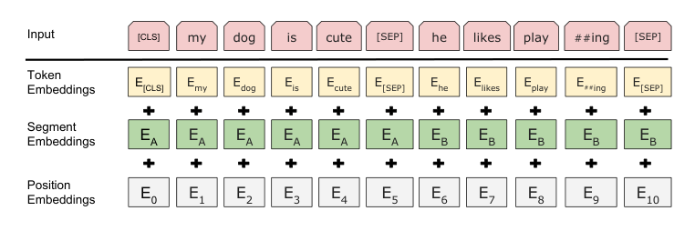
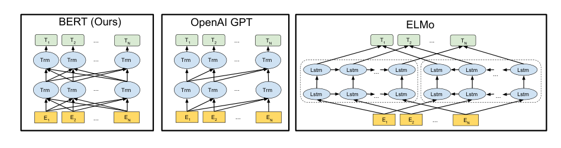
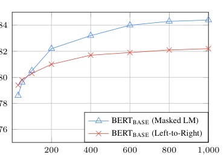

BERT: Pre-training of Deep Bidirectional Transformers for Language Understanding

| Architecture Type | Transformer Encoder (Bidirectional) |
|---|---|
| Key Innovation | Masked Language Model (MLM) and Next Sentence Prediction (NSP) pre-training objectives. |
| Performance Metric | State-of-the-art on 11 NLP tasks, including GLUE, SQuAD, and SWAG. |
| Computational Efficiency | Highly parallelizable during training; enables efficient fine-tuning for downstream tasks. |
| Venue | North American Chapter of the Association for Computational Linguistics |
| Year | 2019 |
| Citations | 112710 |
| DOI | Link |
BERT (Bidirectional Encoder Representations from Transformers) is a groundbreaking language representation model that introduced deep bidirectional pre-training for language understanding. Unlike previous models that processed text left-to-right or right-to-left, BERT is designed to pre-train deep bidirectional representations from unlabeled text by jointly conditioning on both left and right context in all layers. As a result, the pre-trained BERT model can be fine-tuned with just one additional output layer to create state-of-the-art models for a wide range of tasks, such as question answering and language inference.
Bidirectional Pre-training
The fundamental technical innovation of BERT is applying the bidirectional training of Transformer, a popular attention model, to language modeling. Previous attempts at bidirectional models were limited because they were either a combination of two unidirectional models (left-to-right and right-to-left) or they allowed tokens to 'see themselves' in multi-layer architectures.
BERT addresses this by using a 'Masked Language Model' (MLM) objective. During pre-training, some percentage of the input tokens are masked at random, and the model's goal is to predict the original vocabulary id of the masked word based only on its context. This allows the representation to fuse the left and the right context, which allows us to pre-train a deep bidirectional Transformer.
The Masked Language Model (MLM)
In order to train a deep bidirectional representation, the authors simply mask 15% of the input tokens at random. Unlike standard directional models, the MLM objective allows the model to see the entire sequence, making it more effective at capturing nuanced linguistic relationships.
To ensure the model doesn't become over-reliant on the '[MASK]' token during fine-tuning (where masks don't exist), the authors used a specific strategy: 80% of the time the token is replaced with [MASK], 10% of the time with a random token, and 10% of the time it is kept unchanged. This forces the model to maintain a valid contextual representation for every input token.
Next Sentence Prediction (NSP)
Many important downstream tasks such as Question Answering (QA) and Natural Language Inference (NLI) are based on understanding the relationship between two sentences, which is not directly captured by language modeling.
To train a model that understands sentence relationships, BERT is pre-trained for a binarized 'next sentence prediction' task that can be generated from any monolingual corpus. When choosing sentences A and B for each pre-training example, 50% of the time B is the actual next sentence that follows A, and 50% of the time it is a random sentence from the corpus. The model then learns to predict whether B is the next sentence or not.
Fine-Tuning BERT
Fine-tuning BERT is relatively inexpensive. All parameters are fine-tuned jointly by simply adding one additional output layer for the specific task at hand. For sequence-level tasks, BERT uses the representation of the first token in the sequence (the special [CLS] token).
This unified architecture allows BERT to achieve state-of-the-art results on a wide variety of tasks with minimal task-specific architectural changes. The authors demonstrated this by breaking records on the GLUE benchmark, SQuAD question answering, and several other competitive NLP leaderboards.
Concept Breakdown
The ability of the model to look at both the preceding and following words in a sequence simultaneously to understand context.
A pre-training task where certain words in a sentence are hidden, forcing the model to use surrounding context to predict them.
The specific part of the Transformer architecture used by BERT, which focuses on extracting deep contextual features from an input sequence.
The mechanism that allows BERT to weight the importance of different words in a sentence relative to each other.
A special classification token added to the beginning of every sequence, used as the aggregate representation for sequence-level tasks.
Mathematics
Attention Weighting
| Symbol | Meaning |
|---|---|
| $Q, K, V$ | Query, Key, and Value matrices derived from the input |
| $d_k$ | The dimension of the keys, used for scaling |
Figures and Explanations

Comparison of BERT's bidirectional architecture with OpenAI GPT (unidirectional) and ELMo (shallow concatenation of two unidirectional models).

BERT input representation, showing how token, segment, and position embeddings are summed to form the final input vector.

See Also
References
- Multi-Granularity Hierarchical Attention Fusion Networks for Reading Comprehension and Question Answering - Wei Wang, Chen Wu et al. (2018)
- U-Net: Machine Reading Comprehension with Unanswerable Questions - Fu Sun, Linyang Li et al. (2018)
- Semi-Supervised Sequence Modeling with Cross-View Training - Kevin Clark, Minh-Thang Luong et al. (2018)
- Dissecting Contextual Word Embeddings: Architecture and Representation - Matthew E. Peters, Mark Neumann et al. (2018)
- SWAG: A Large-Scale Adversarial Dataset for Grounded Commonsense Inference - Rowan Zellers, Yonatan Bisk et al. (2018)
- Character-Level Language Modeling with Deeper Self-Attention - Rami Al-Rfou, Dokook Choe et al. (2018)
- Contextual String Embeddings for Sequence Labeling - A. Akbik, Duncan A. J. Blythe et al. (2018)
- Neural Network Acceptability Judgments - Alex Warstadt, Amanpreet Singh et al. (2018)
- GLUE: A Multi-Task Benchmark and Analysis Platform for Natural Language Understanding - Alex Wang, Amanpreet Singh et al. (2018)
- Deep Contextualized Word Representations - Matthew E. Peters, Mark Neumann et al. (2018)
- An efficient framework for learning sentence representations - Lajanugen Logeswaran, Honglak Lee (2018)
- QANet: Combining Local Convolution with Global Self-Attention for Reading Comprehension - Adams Wei Yu, David Dohan et al. (2018)
- MaskGAN: Better Text Generation via Filling in the ______ - W. Fedus, I. Goodfellow et al. (2018)
- Universal Language Model Fine-tuning for Text Classification - Jeremy Howard, Sebastian Ruder (2018)
- Simple and Effective Multi-Paragraph Reading Comprehension - Christopher Clark, Matt Gardner (2017)
- Learned in Translation: Contextualized Word Vectors - Bryan McCann, James Bradbury et al. (2017)
- SemEval-2017 Task 1: Semantic Textual Similarity Multilingual and Crosslingual Focused Evaluation - Daniel Matthew Cer, Mona T. Diab et al. (2017)
- Attention is All you Need - Ashish Vaswani, Noam Shazeer et al. (2017)
- Reinforced Mnemonic Reader for Machine Reading Comprehension - Minghao Hu, Yuxing Peng et al. (2017)
- Supervised Learning of Universal Sentence Representations from Natural Language Inference Data - Alexis Conneau, Douwe Kiela et al. (2017)